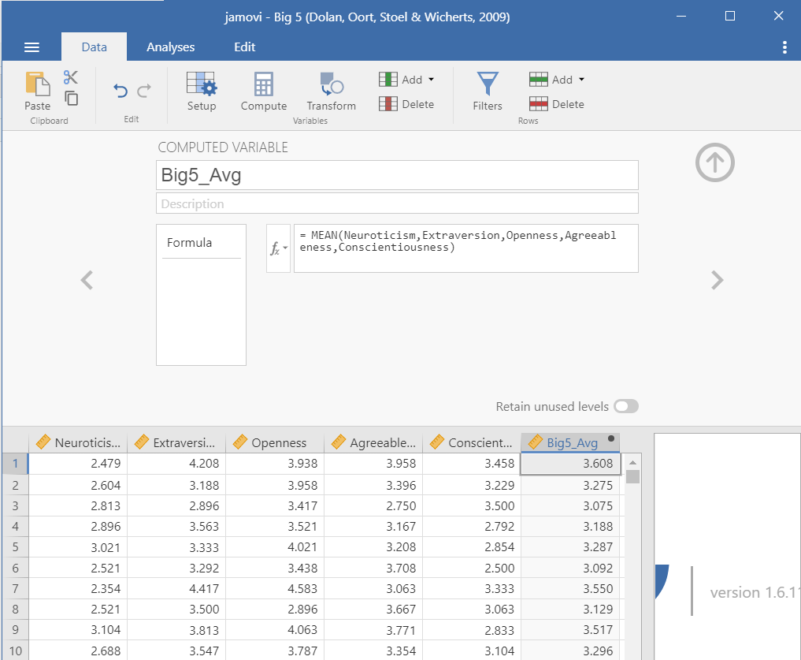

6.2 Compute
Sometimes you need to create new variables from your raw (meaning uncleaned) data. I recommend you watch this video by Alexander Swan on computing variables in jamovi.
Perhaps you collected data on a scale that has five items. Normally, we create an average score of all the five items and that new computed average score is what we use in our analyses.
Let’s open the Big 5 dataset built into jamovi. You can open this dataset by clicking the three horizontal lines on the top left of jamovi (the menu), choose Open, then select Data Library. In the main Data Library folder is a dataset called Big 5.
This dataset has the scores on all five subscales of the Big Five personality test. Let’s imagine we want the average score of the entire Big Five test.
Go to the Data tab in jamovi.
Click
Compute. Note that jamovi will create a new variable directly after the column you have selected. If you want this variable to be at the end of your dataset, you should select the last column of the dataset and then click Compute.Rename the computed variable to something meaningful (e.g.,
Big5_Avg)Add in an informative description for your computed variable (e.g.,
Mean score of the Big 5 personality traits)Click the \(f_x\) (formula) button.
Under Functions, find the function we are computing. In this case it is
Meanbut sometimes scales want us to useSum. These are the two functions we will primarily use in this course.jamovi tells us more information about the particular formula function. In this case, it says
MEAN(*number1, number2, ..., ignore_missing=0, min_valid=0). Therefore, we need to specify the numbers we are calculating the mean for. Theignore_missingargument is defaulted to 0 (do not ignore missing values) but you could set it to 1 (ignore missing values). Themin_validargument is defaulted to 0 variables, but you could specify the minimum number of valid responses we want in order to calculate the function.Double click on the function
Meanto enter it into the formula box. You should see=MEAN()now.Click inside the parentheses and double click the first variable of the Big 5. Then add a comma. Double click the second variable and add a comma. Repeat until you have all variables in the formula box.
When you are complete, click outside of the function box and it will automatically create your computed variable.
jamovi will often tell you if there is an error in your formula. For
example, if you get the warning “Column NAME does not exist
in the dataset” that means you entered something incorrect; typically,
you either mispelled a variable or forgot to separate variables with
commas.
You can see what we need to do with this dataset below. There’s actually no missing data, so the two additional arguments aren’t necessary for us to worry about.

Note that this was creating an average score using the MEAN() function. Sometimes, psychological scales want you to create a total score using the SUM() function. jamovi also has a lot of other functions you may need to use in the future.
After computing a new variable, I always like to double check the work to make sure it’s okay. I review to make sure if there is any missing data that it’s appropriate (e.g., I specified min_valid=9 for a 10-item scale, so only people with at least 9 valid responses should have a mean calculated). If I’m doing other basic math, I also like to make sure that I specified it correctly by manually calculating a few rows myself.
If you’d like to learn more about computed variables in jamovi, check out this jamovi blog post on the topic.